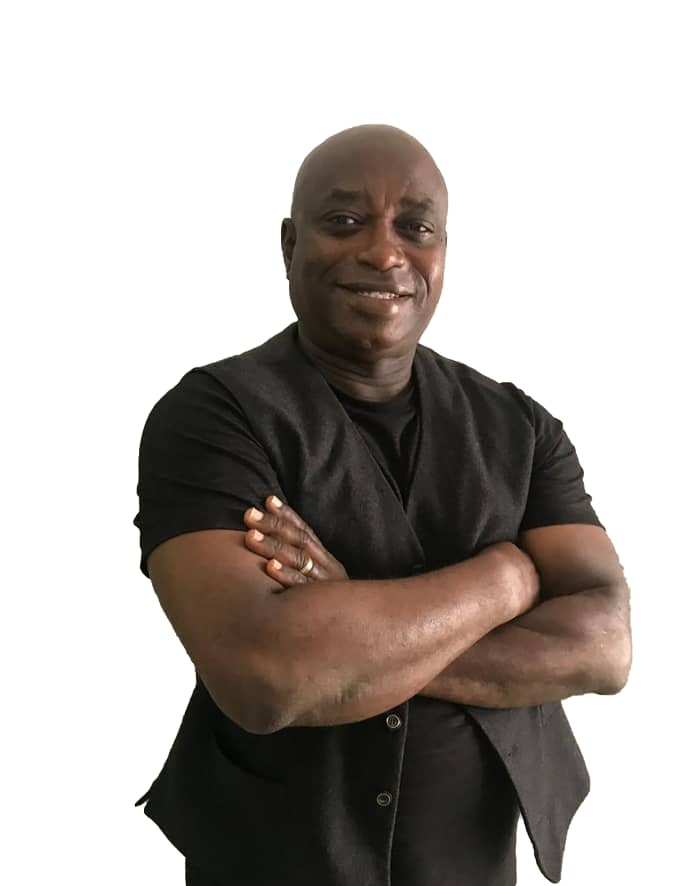
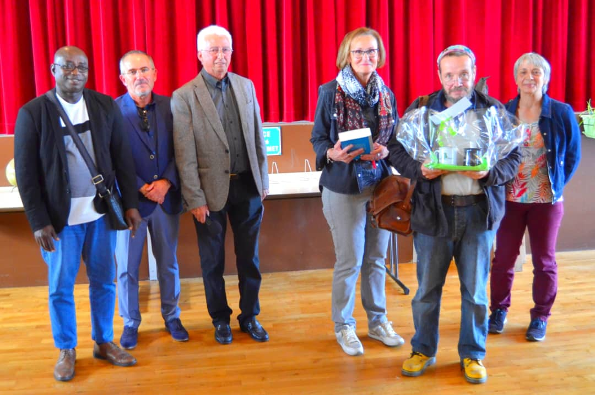
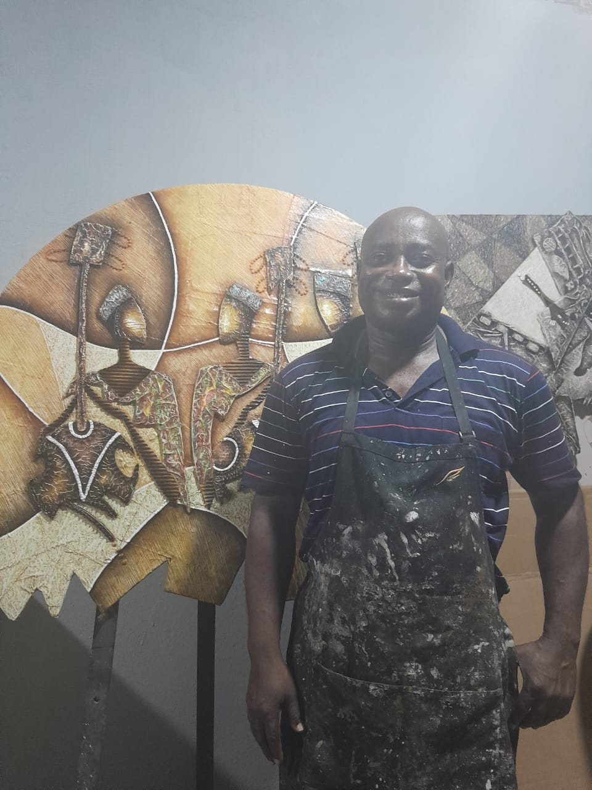
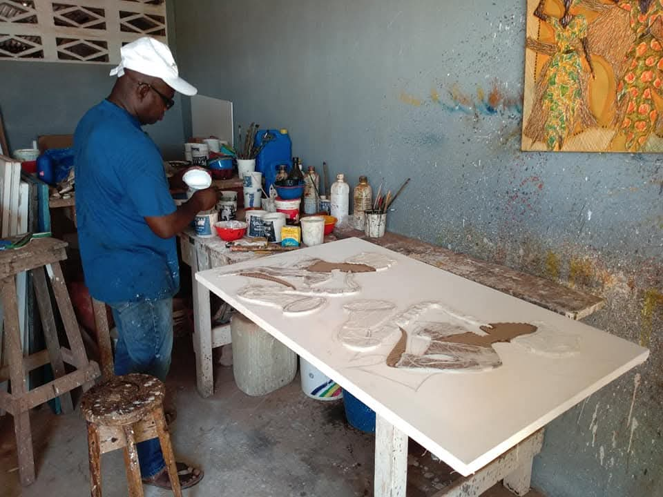
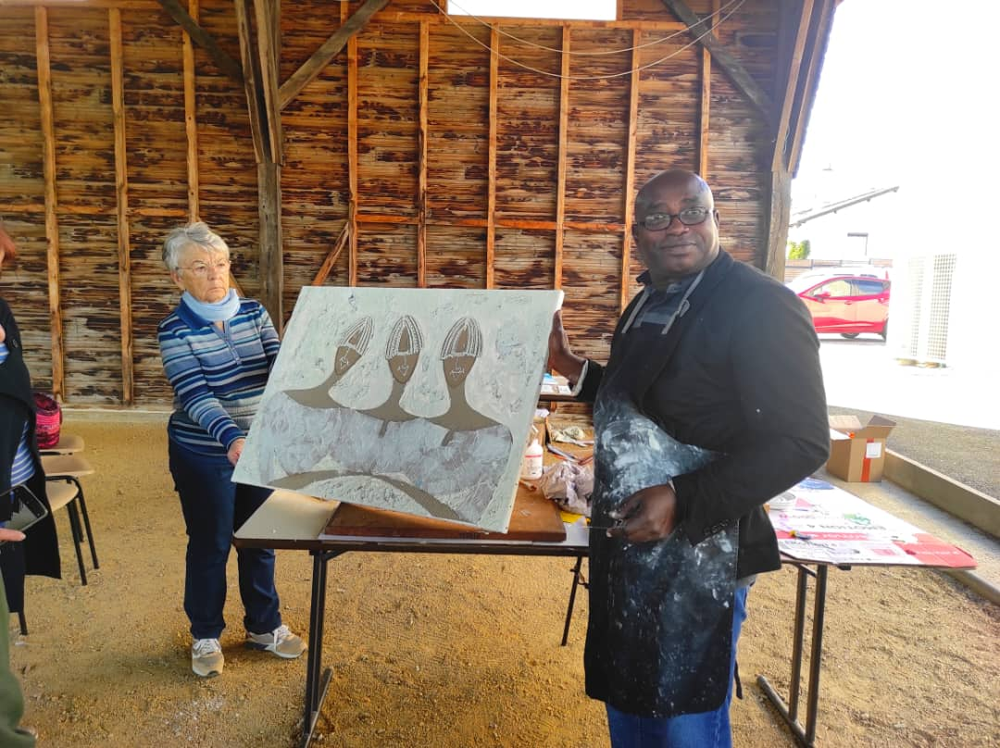
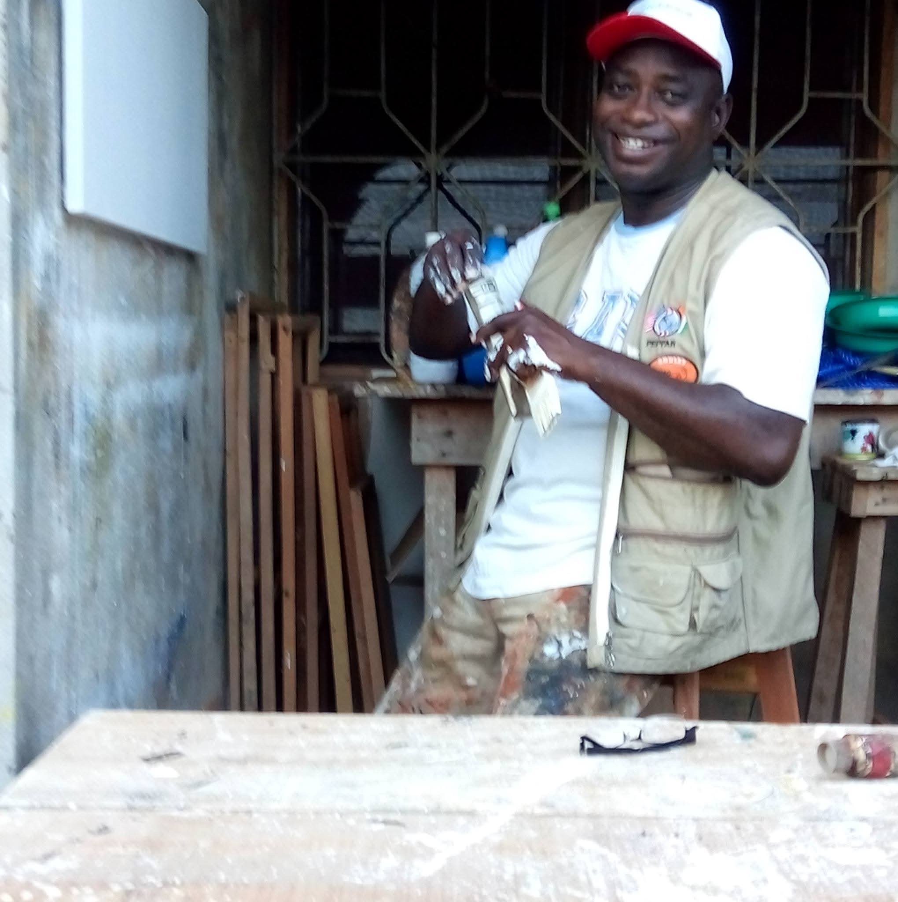
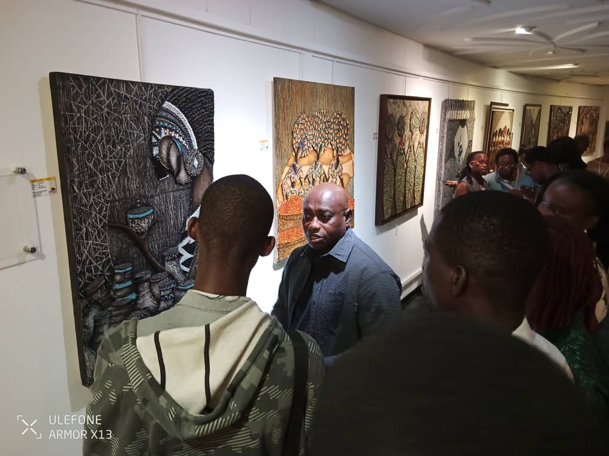
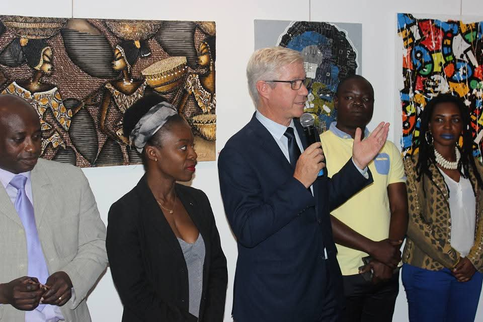
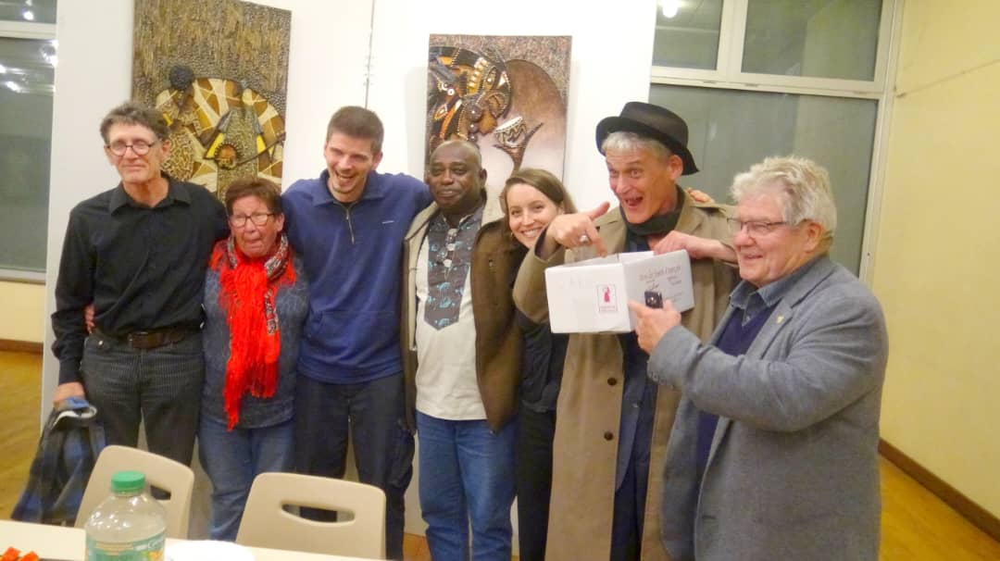

Œuvre originale
Identifiant
Technique
Dimensions
Année de réalisation
Support
Collection
Disponibilité
Art africain contemporain
À mi-chemin entre peinture et sculpture, ses œuvres célèbrent la diversité des cultures.

« Chaque toile est un rite — une façon de redonner corps aux silhouettes, aux tissus, aux regards qui font l'Afrique. »

L'artiste
Il y a dans les toiles de Maurhy F. une façon singulière de faire parler les corps — ces silhouettes qui portent des vêtements comme on porte une histoire.
Formé aux arts plastiques à Abidjan, l'artiste développe une œuvre profondément ancrée dans l'héritage culturel africain : les motifs de tissus, les coiffures, les gestes quotidiens deviennent des territoires de beauté et de mémoire.
Sa technique unique de relief mixte — à mi-chemin entre peinture et sculpture — donne à chaque toile une dimension tactile saisissante, où le carton ondulé, l'enduit et les pigments se superposent pour créer des œuvres qui vibrent littéralement sous la lumière.
Biographie
Originaire du nord de la Côte d'Ivoire, Fondio Maurhy est un artiste en grande partie autodidacte. De 1991 à 1993, il suit des cours du soir à l'Institut National des Arts (INA), devenu l'INSAAC.
Parallèlement, il fréquente les ateliers de peintres confirmés et bénéficie du mentorat de Tamsir Dia et Youssouf Dekimbirila. Il approfondit également ses connaissances en étudiant le travail technique de grands maîtres.
Par la suite, Maurhy développe une approche artistique personnelle, s'éloignant de ce qu'il considère comme une démarche purement académique. Une de ses particularités réside dans la variété des formes de supports qu'il utilise, allant des formats classiques aux créations plus originales.
Maurhy a exposé ses œuvres à Abidjan, où il vit et travaille, ainsi qu'à l'étranger — en Europe et en Amérique.
Le relief mixte est la signature de la démarche artistique de Fondio Maurhy — une fusion entre la 2D et la 3D, à mi-chemin entre la peinture et la sculpture.
Le tout repose sur un fond de collages de matériaux divers : papier mâché, carton, textures végétales. Le choix des couleurs est un mélange subtil de pigments naturels, de granulés de café, d'acrylique et d'huile.
L'artiste oscille entre le symbolisme, le figuratif et la décoration. Ses œuvres sont un appel à la construction d'un monde harmonieux où les individus et les peuples s'acceptent malgré leurs différences de races et de cultures.
Le relief mixte est, au sens propre comme au figuré, une manière de traduire la mixité des relations humaines — faites de divergences, d'interactions, de tolérance et d'acceptation.
Dans l'intimité de la création

Maurhy F. dans l'intimité de son atelier, devant ses reliefs monumentaux. Le tablier maculé de peinture témoigne d'un labeur quotidien au service de l'art.

Le processus de création en relief mixte, où couches de matière, carton ondulé et enduits se superposent avant de recevoir couleurs et pigments.

Maurhy F. partageant sa technique unique de relief mixte devant un public captivé, lors d'un vernissage aux Etats-Unis. L'art comme pont entre les cultures.

Maurhy F. dans son atelier d'Abidjan, pinceaux en main, là où naissent les textures et les reliefs qui donneront vie à ses œuvres.
Agenda
Galerie Espace Art — Paris, France
Buxières-les-Mines, France — Invité d'honneur
Centre Culturel Africain — Abidjan, Côte d'Ivoire
Fondation Blachère — Apt, France
Sofitel Hôtel Ivoire — Abidjan, Côte d'Ivoire

Maurhy F. échangeant avec les visiteurs devant ses reliefs monumentaux. Chaque rencontre est un dialogue entre l'artiste et son public.

Les œuvres de Maurhy F. exposées aux côtés des plus grands noms de l'art contemporain africain, au Sofitel Hôtel Ivoire.

Maurhy F., invité d'honneur du 42ème Salon des arts visuels, entouré d'artistes et d'amateurs d'art. Un moment de partage et de convivialité.
La collection
Œuvre originale